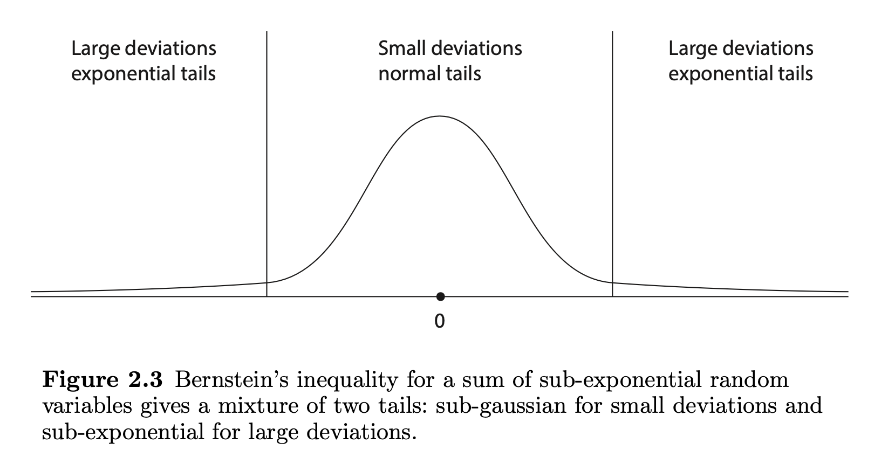

These notes support STAT 709 at the University of Wisconsin–Madison. Use them alongside the cited textbooks; corrections and questions are welcome.
Limits. A limit theorem describes a distribution as the sample size grows.
Finite samples. A concentration inequality instead controls a probability at the sample size in hand.
Tools. The central tools are the exponential Markov bound, the subgaussian moment-generating-function bound, and Bernstein’s two deviation scales.
Use. We track which assumptions justify each bound and how to turn a tail probability into a confidence radius.
This begins Part V. The part overview connects these lectures and includes a final self-check.
Recap from earlier lecturesFrom Lectures 1, 4, 5 and 10: moments and tails · 1 min
Reminder only: this block introduces no new exam requirements.
Markov. For \(Y\ge0\) and \(a>0\), \(P(Y\ge a)\le\mathbb EY/a\). Used in Section 2.
Tail integral. \(\mathbb EY=\int_0^\infty P(Y>t)\,dt\) for \(Y\ge0\) links moments and tails. Used in Section 2.
Gaussian tails. Mills bounds quantify how quickly a standard Normal tail decays. Used in Section 1.
CLT and Berry–Esseen. A limiting distribution and an approximation-error bound answer different questions. Used in Section 1.
Independence. Expectations of products factor, when defined; moment-generating functions therefore multiply. Used in Sections 2–3.
Learning goals
Recognize subgaussian and subexponential tail behavior.
Use the Chernoff method to obtain a probability bound.
Apply Hoeffding and Bernstein with the correct scale parameters.
Interpret the two deviation regimes in Bernstein.
In this lecture, we will introduce some basics for understanding high-dimensional phenomena.
What are concentration inequalities?
From the LLN, we know that an empirical mean \(\hat \mu\) “concentrates” around the population mean \(\mu\). This is characterized by the asymptotic notion of convergence in probability. When we zoom in on the difference \(\hat \mu - \mu\) by multiplying it with a factor of \(\sqrt{n}\), then, under the i.i.d. finite-variance CLT assumptions, \(\sqrt{n}(\hat\mu-\mu)\) has a normal distribution asymptotically.
Concentration inequalities provide non-asymptotic bounds on the difference as an alternative way of characterizing the concentration. Usually we will see statements like “With very high probability, a certain event (e.g. inequality) happens.” Often, the exception probability decays exponentially in the number of variables. Compared with classical asymptotic theory, concentration inequalities often give us refined quantitative control of extreme/exception probabilities.
In this lecture, we use \(C\) and \(c\) for positive absolute constants, which may change from line to line. An unsubscripted vector norm \(\|a\|\) means \(\|a\|_2\).
1. Motivation for concentration inequalities
Recall the central limit theorem: if \(X_1, X_2, \ldots, X_n \stackrel{\iid}{\sim} X\) satisfy \(\mathbb{E} X = 0\) and \(\mathbb{E} X^2 = 1\), then \[\frac{1}{\sqrt{n}}\sum_{i=1}^n X_i \stackrel{d}{\longrightarrow} \mathcal{N}(0, 1).\] Recall the Gaussian tail probability bounds from Lecture 1.
Let \(G \sim \mathcal{N}(0, 1)\), then for any \(t > 0\), \[\left(\frac{1}{t} - \frac{1}{t^3}\right) \frac{1}{\sqrt{2\pi}} e^{-t^2/2} \le \mathbb{P}(G \ge t) \le \frac{1}{t} \frac{1}{\sqrt{2\pi}} e^{-t^2/2}.\]
Let \(\Phi\) and \(\phi\) be the standard Gaussian CDF and density, respectively. From the above proposition, if \(t\to\infty\), then \[1-\Phi(t)=(1+o(1))\frac{\phi(t)}{t}.\] If we pretend that the following approximation is valid, \[\mathbb{P}\big(\frac{1}{n}\sum_{i=1}^n X_i > t \big) = \mathbb{P}\big(\frac{1}{\sqrt{n}}\sum_{i=1}^n X_i > \sqrt{n}\,t \big) \approx \mathbb{P}(G > \sqrt{n}t),\] then the tail probability of empirical mean of \(n\) i.i.d. random variables is \(O\left(e^{-{nt^2/2}}\right)\). The CLT alone does not justify this approximation: its convergence at fixed thresholds gives no relative-error control at the moving threshold \(\sqrt n\,t\). Exponentially decaying bounds do hold under stronger tail assumptions, which we develop below.
Suppose that \(X_1,X_2,\ldots, X_n\) are i.i.d. random variables with zero mean, variance one and finite absolute third moment. Then, for all \(t \in \R\), \[\left| \mathbb{P}\left(\frac{1}{\sqrt{n}}\sum_{i=1}^n X_i \ge t\right) - \mathbb{P}(G \ge t)\right| \le \frac{C\mathbb{E}|X_1|^3}{\sqrt{n}},\] where \(C\) is a positive constant.
The error term is \(O\left(\frac{1}{\sqrt{n}}\right)\), much larger than \(O\left(e^{-nt^2/2}\right)\) for a fixed \(t>0\) as \(n\to\infty\). Moreover, the error term cannot be made smaller in general due to the next simple example.
Thus Berry–Esseen gives a valid additive bound for \(\PR(n^{-1}\sum_iX_i\ge t)\), but its \(n^{-1/2}\) error can be much larger than the exponentially small probability we want to bound.
Let \(X_1, X_2, \ldots, X_n \stackrel{\iid}{\sim} \mathrm{Bernoulli}(\frac{1}{2})\), where \(n\) is an even integer, then \[\mathbb{P}\left(\sum_{i=1}^{n}X_i = \frac{n}{2}\right) = 2^{-n} \binom{n}{n/2} = 2^{-n} \frac{n!}{[(n/2)!]^2}.\] Applying Stirling’s approximation: \[n! = (1+ o(1)) \sqrt{2\pi n} \left(\frac{n}{e}\right)^n,\] we have \[\mathbb{P}\left(\sum_{i=1}^{n}X_i = \frac{n}{2}\right) = (1 + o(1))\sqrt{\frac{2}{\pi}}\frac{1}{\sqrt{n}}\] such that \[\mathbb{P}\left(\frac{1}{\sqrt{n}}\sum_{i=1}^{n}(X_i-\mathbb E X_i) = 0\right) = (1+o(1))\sqrt{\frac{2}{\pi}}\frac{1}{\sqrt{n}}.\] Note that \(\mathbb{P}(G = 0) = 0\). In this example, the jump has order \(n^{-1/2}\), so any continuous CDF differs from this discrete CDF on at least one side of the jump by half that size. After standardizing the Bernoulli variance, Berry–Esseen gives a matching upper order.
See Exercise 1 in Section 7 for the full statement and complete solution.
2. Subgaussian variables and Hoeffding’s inequality
To achieve our goal of bounding tail probabilities, we will need to build the machinery from scratch. First, we introduce an important definition.
Let \(X\) be a random variable with \(\mathbb{E}X = 0\). Consider three conditions.
(i) \(\mathbb{P}(|X| \ge t) \le 2e^{-t^2/K_1^2},~\forall\;t \ge 0\).
(ii) \(\sup_{p\ge 1}\frac{1}{\sqrt{p}}(\mathbb{E}|X|^p)^{1/p} \le K_2\).
(iii) \(\mathbb{E}[e^{\lambda X}] \le e^{K_3^2 \lambda^2},~\forall\;\lambda \in \mathbb{R}\).1
The three conditions are equivalent up to absolute constants: if one holds with constant \(K_j\), each other condition holds with a suitable \(K_i\le CK_j\). We say \(X\) is a subgaussian random variable if any of the three conditions holds.
Proof. (i)\(\Rightarrow\)(ii): Without loss of generality, assume \(K_1 = 1\). Otherwise set \(X := X / K_1\). Observe \[\begin{aligned} \mathbb{E}|X|^p &= \int_0^{\infty}\mathbb{P}(|X| \ge t) pt^{p-1}dt \qquad \text{(see Lecture 4, or use Fubini's theorem)}\\ &\le \int_0^\infty 2p t^{p-1}e^{-t^2}dt\\ & = p \int_0^\infty u^{(p-2)/2} e^{-u}\; du \qquad \text{(change of variables $u = t^2$)} \\ &= p\, \Gamma(p/2) \qquad \text{(Gamma function)} \\ &\le 3p(\frac{p}{2})^{p/2}\qquad \text{(by property of Gamma functions).} \end{aligned}\] (ii)\(\Rightarrow\)(iii): Let \(\widetilde X\) be an independent copy, and \(Z=X-\widetilde X\). Exchanging the copies shows that \(Z\) is symmetric. Jensen and independence give \(\E e^{\lambda X}\le\E e^{\lambda Z}\). From (ii) and Minkowski, \((\E|Z|^{2m})^{1/(2m)}\le2K_2\sqrt{2m}\). Symmetry, the nonnegative series for \(\cosh\), and Tonelli give \[\E e^{\lambda Z}=\E\cosh(\lambda Z)=1+\sum_{m\ge1}\frac{\lambda^{2m}\E Z^{2m}}{(2m)!}.\] Using \((2m)!\ge(2m/e)^{2m}\) and \(m!\le m^m\), the \(m\)-th coefficient is at most \((2e^2K_2^2\lambda^2)^m/m!\). Therefore \(\E e^{\lambda X}\le\exp(2e^2K_2^2\lambda^2)\). The finite bound also justifies exponential integrability; Tonelli applies to nonnegative terms.
(iii)\(\Rightarrow\)(i): Without loss of generality, assume \(K_3 = 1\). For any \(\lambda > 0\), \(t > 0\), \[\begin{aligned} \mathbb{P}(X \ge t) &\le \mathbb{P}(e^{\lambda X} \ge e^{\lambda t}) \\ &\le e^{-\lambda t} \mathbb{E} e^{\lambda X} \qquad \text{(by Markov's inequality)}\\ &\le e^{-\lambda t + \lambda^2}\\ &\le e^{-t^2/4} \qquad \text{(choose $\lambda = t/2$ to minimize $-\lambda t + \lambda^2$).} \end{aligned}\] Repeating the same for \(-X\), we have \[\mathbb{P}(-X \ge t) \le e^{-t^2/4}.\] Therefore, \[\mathbb{P}(|X| \ge t) \le 2e^{-t^2/4},\qquad \forall\;t > 0.\] ◻
Moment growth. Taking \(p\)th roots in (i)\(\Rightarrow\)(ii) gives \(\|X\|_{L^p}\le C\sqrt p\), since \((3p)^{1/p}\) is uniformly bounded for \(p\ge1\).
Definition. The smallest \(K_2\) in condition (ii) is called the subgaussian norm of \(X\), denoted by \(\|X\|_{\psi_2}\). By Minkowski inequality, it is easy to check that it satisfies the requirements of a norm (see Exercise 5).
Interpretation. Like standard deviation, it measures the spread of a centered variable, but finite subgaussian norm additionally controls the tails.
Convention. We use the moment definition for variables with any mean; only the uncentered MGF bound (iii) requires mean zero. Some textbooks use an exponential-moment definition of \(\|X\|_{\psi_2}\); these conventions agree up to absolute constants.
If \(X \sim \mathcal{N}(0, \sigma^2)\), then \(\|X\|_{\psi_2} \le C \sigma\).
If \(|X| \le M\) a.s., then \(\|X\|_{\psi_2} \le CM\).
For a sum of independent subgaussian random variables, we have the desired Gaussian tail bound.
Let \(X_1, X_2, \ldots, X_n\) be independent random variables, such that \(\mathbb{E} X_i = 0\) and each \(X_i\) is subgaussian. Let \(a = (a_1,\ldots, a_n)\) be a nonrandom vector. Denote \(K := \max_{1\le i \le n} \|X_i\|_{\psi_2}\). Then
\[\mathbb{P}\left(\left|\sum_{i=1}^{n}a_i X_i\right|\ge t\right) \le 2\exp\left(-\frac{ct^2}{K^2\|a\|^2}\right)\]
(1)holds for \(t>0\) and a positive absolute constant \(c\). If \(K\|a\|_2=0\), the sum is zero almost surely, so this degenerate case is handled directly.
In particular, if we choose \(a_i = 1/n\) for all \(i\) then Hoeffding’s inequality says that we have the Gaussian tail bound.
Apart from the constant, this bound cannot be improved. In the case \(X_i \stackrel{\iid}{\sim} N(0,1)\), we have \(\sum_{i=1}^{n}a_i X_i \sim N(0, \| a \|^2)\), so by Proposition 1 its tail has exponent \(-t^2/(2\|a\|^2)\) up to the stated polynomial factor.
Proof. Of Theorem 2.
\[\begin{aligned} \mathbb{E} \exp\left(\lambda \sum_{i=1}^{n}a_i X_i \right) &= \prod_{i=1}^{n} \mathbb{E} \exp(\lambda a_i X_i) \qquad \text{(by independence)}\\ &\le \prod_{i=1}^{n} \exp(C\lambda^2a_i^2\|X_i\|_{\psi_2}^2)\qquad\text{(by Theorem~1~(iii))}\\ &\le \exp(C\lambda^2 \sum_{i=1}^{n} a_i^2 K^2)\\ &= \exp(C\lambda^2 \|a\|^2 K^2). \end{aligned}\] Then use Theorem 1 (i). ◻
Subgaussian scaling.
A centered subgaussian variable has a Gaussian-type MGF bound. For independent weighted sums, the squared coefficient scales add; a Chernoff argument converts that sum into a tail bound.
3. Subexponential variables and Bernstein’s inequality
When we say two quantities \(s\) and \(t\) are up to a constant, we mean \(ct \le s \le Ct\) for absolute constants \(c,C>0\).
We introduce another notion that characterizes the fast decay of the tail probability, though not as fast as subgaussian tails.
Let \(X\) be a random variable with \(\mathbb{E}X = 0\).
(i) \(\mathbb{P}(|X| \ge t) \le 2e^{-t/K_1},~\forall\;t \ge 0\).
(ii) \(\sup_{p\ge 1}\frac{1}{p}(\mathbb{E}|X|^p)^{1/p} \le K_2\).
(iii) \(\mathbb{E}[e^{\lambda X}] \le e^{K_3^2\lambda^2},~\forall\;|\lambda| \le 1 / K_3\).
The three conditions are equivalent up to absolute constants: each condition with \(K_j\) implies the others with suitable \(K_i\le CK_j\). See [1] (Proposition 2.7.1) for the parallel proof.
The smallest \(K_2\) in condition (ii) is called the subexponential norm of \(X\), denoted by \(\|X\|_{\psi_1}\). By definition, subgaussian random variables are necessarily subexponential random variables with \(\|X\|_{\psi_1} \le \|X\|_{\psi_2}\); this is because \[\frac{1}{p}(\mathbb{E}|X|^p)^{1/p} \le \frac{1}{\sqrt{p}}(\mathbb{E}|X|^p)^{1/p}, \qquad \text{for any}~p \ge 1\] so taking \(\sup_{p\ge 1}\) yields \(\|X\|_{\psi_1} \le \|X\|_{\psi_2}\). In fact, intuitively, a subexponential random variable can be viewed as the square of a subgaussian random variable. This intuition is captured by the following lemma.
Centering.
For random variables with nonzero mean, conditions (i) and (ii) in Theorem 3 (and similarly in Theorem 1) are still equivalent. Moreover, we have the bound \[\| X - \E X \|_{\psi_2} \le C\|X \|_{\psi_2}.\] See Lemma 2.6.8 of the book [1].
Suppose that \(X\), \(Y\) are subgaussian (not necessarily independent). Then \(XY\) is subexponential with \[\|XY\|_{\psi_1}\le2\|X\|_{\psi_2}\|Y\|_{\psi_2}.\]
Proof. We use the second condition of subgaussian and subexponential random variables. \[\begin{aligned} \left[\mathbb{E}(|X|^p|Y|^p)\right]^{1/p} &\le \left[\mathbb{E}|X|^{2p} \mathbb{E}|Y|^{2p}\right]^{1/(2p)} \qquad \text{ (Cauchy--Schwarz Inequality)} \\ &\le \|X\|_{\psi_2}\sqrt{2p}\,\|Y\|_{\psi_2}\sqrt{2p} =2p\|X\|_{\psi_2}\|Y\|_{\psi_2}. \end{aligned}\] ◻
Let \(G \sim \mathcal{N}(0, 1)\), then \(G^2\) (namely chi-square \(\chi_1^2\)) is subexponential, \(\|G^2\|_{\psi_1} \le C\).
Let \(X \sim \text{Exp}(1)\) be an exponential random variable, then \(\|X\|_{\psi_1} \le C\).
Let \(X\) be a random variable such that \(|X| \le M\) is bounded for \(M \ge 0\). Then, \(\|X\|_{\psi_1} \le CM\).
Now we are in a position to state the concentration inequality for a sum of subexponential random variables.
Let \(X_1, \ldots, X_n\) be independent random variables, such that \(\mathbb{E} X_i = 0\) and each \(X_i\) is subexponential. Let \(a = (a_1,\ldots,a_n)\) be a nonrandom vector. Denote \(K := \max_{1\le i \le n} \|X_i\|_{\psi_1}\). Then
\[\mathbb{P}\left(\big|\sum_{i=1}^n a_iX_i\big| \ge t\right) \le 2\exp\left(-c\min\left(\frac{t^2}{K^2\|a\|^2}, \frac{t}{K\|a\|_{\infty}}\right)\right),\]
(2)for \(t>0\), with a positive absolute constant \(c\); a zero scale again means the sum vanishes almost surely.
Subexponential random variables have “heavier” tails compared with subgaussian random variables. As expected, the upper bound in Equation 2 is worse than the bound in Hoeffding’s theorem, since it involves an additional term \(t / (K \| a \|_{\infty})\) in the exponent.
Proof. We apply a similar strategy as in the proof for Hoeffding’s inequality. \[\mathbb{P}\left(\sum_{i=1}^n a_iX_i \ge t\right) \le e^{-\lambda t} \prod_{i=1}^{n} \mathbb{E}e^{a_i \lambda X_i}.\] If \(|\lambda| \le \frac{C}{\|a\|_{\infty}K}\), then by (iii) and the same argument for the negative sum, \[\mathbb{P}\left(\big|\sum_{i=1}^n a_iX_i\big| \ge t\right) \le 2\exp\left(-\lambda t + C\lambda^2K^2\|a\|^2\right).\]
Choose a legal parameter. Write the exponent as \(-\lambda t+A\lambda^2\), where \(A=CK^2\|a\|_2^2\), and let \(L=c_0/(K\|a\|_\infty)\) be the permitted MGF range. For a nonzero scale, choose \[\lambda=\min\{t/(2A),L/2\}.\]
Quadratic regime. If \(t\le AL\), the exponent is \(-t^2/(4A)\).
Linear regime. If \(t>AL\), it is at most \(-Lt/2+AL^2/4\le-Lt/4\). These are the quadratic and linear terms in the claimed bound. If the sum is identically zero, handle it directly.
◻
Let \(X_1, \ldots, X_n\) be independent random variables, such that \(\mathbb{E} X_i = 0\) and \(\max_{1\le i \le n}|X_i| \le M\) a.s. Then \[\mathbb{P}\left(\big|\sum_{i=1}^n X_i\big| \ge t\right) \le 2\exp\left(-\frac{t^2/2}{\sigma^2 + Mt/3}\right),\] where \(\sigma^2 = \sum_{i=1}^n \mathbb{E}X_i^2\) is total variance.
Note that \[\max\{\sigma^2, Mt/3\} \le \sigma^2 + Mt/3 \le 2 \max\{\sigma^2, Mt/3\},\] so the exponent in the upper bound of Theorem 5 is roughly (up to a constant2) \[-\frac{t^2}{\max\{\sigma^2, Mt\}} = - \min\left\{ \frac{t^2}{\sigma^2}, \frac{t}{M} \right\}\] This is similar to the exponent in the bound in (2)
There is a popular variant of Bernstein’s inequality.
\[\mathbb{P}\left(\big|\sum_{i=1}^{n} X_i\big| \ge \frac{C(\sigma + M)}{\delta}\right) \le 2\exp\left(-\min\left(\frac{1}{\delta}, \frac{1}{\delta^2}\right)\right), \qquad \text{for any}~\delta > 0,\]
(3)where \(C\) is a certain constant. This inequality is a consequence of Theorem 5. In fact, note that \[\frac{-t^2/2}{\sigma^2+Mt/3}\le\frac{-t^2}{4\max\{\sigma^2,Mt/3\}} = -\min\left\{\frac{t^2}{4\sigma^2}, \frac{3t}{4M}\right\}.\] So choosing \(t = \frac{C(\sigma + M)}{\delta}\) with a sufficiently large \(C\) leads to \[\frac{t^2}{4\sigma^2} \ge \frac{1}{\delta^2}, \qquad \frac{3t}{4M} \ge \frac{1}{\delta}\] and therefore leads to the upper bound in Equation 3.
Instructor’s NoteTwo costs of a large deviation
A moderate fluctuation can be built from many small contributions, so a variance scale is natural. A very large fluctuation can be driven by a large individual contribution, so the largest weight enters too. Bernstein’s minimum in the exponent keeps both possibilities in view.
Two Bernstein regimes.
Subexponential sums have a quadratic exponent for moderate deviations and a linear exponent for large deviations. Products of subgaussians naturally have this weaker tail behavior.
See Exercise 3 in Section 7 for the full statement and complete solution.
4. Understanding the two tail probabilities
A centered subgaussian variable has a Gaussian-type MGF bound. For independent weighted sums, the squared coefficient scales add; a Chernoff argument converts that sum into a tail bound.
Subexponential sums have a quadratic exponent for moderate deviations and a linear exponent for large deviations. Products of subgaussians naturally have this weaker tail behavior.
For the link between tails and expectation, revisit Lecture 4: area under the survival curve.

Figure excerpt: Vershynin, High-Dimensional Probability, Figure 2.3.
Let \(X_1, X_2,\ldots,X_n\) be independent random variables, and \(a = (a_1,\ldots,a_n)\) a nonrandom vector. We are interested in the tail probability of the sum \(S_n=\sum_{i=1}^n a_iX_i\). When each \(X_i\) has mean zero and variance one, \(\Var(S_n)=\|a\|^2\); use this normalization in the following comparison, with uniformly bounded tail norms.
Gaussian distribution. In the canonical case \(X_i \stackrel{d}{=} N(0,1)\), we have \(S_n \stackrel{d}{=} N(0, \|a\|^2)\), so the distribution of \(S_n\) is completely determined by its variance. According to Proposition 1, the tail probability is mainly determined by \(e^{-t^2 / (2\|a\|^2)}\) (ignoring poly-factor).
Asymptotic normal distribution. Under certain conditions we expect the asymptotic normality \(S_n / \| a\| \stackrel{d}{\to} N(0, 1)\), so approximately \(S_n \stackrel{d}{\approx} N(0, \|a\|^2)\). However, as we explained in Section 1, the CLT controls fixed standardized thresholds; it does not by itself give a relative approximation for increasingly rare tails.
Subgaussian distribution. If the tail probability of each individual \(X_i\) is “lighter” (in the sense of Theorem 1(i)) than the standard Gaussian tail, then we still get a “light” tail controlled by \(e^{-ct^2 / (2\|a\|^2)}\) (up to constant \(c\) in the exponent).
Subexponential distribution. If the tail of \(X_i\) is slightly heavier than Gaussian, then \(S_n\) has an upper bound with two deviation regimes in Equation 2—one is Gaussian \(e^{-ct^2 / (2\|a\|^2)}\) and another is exponential \(e^{-ct / \|a\|_{\infty}}\). The tail probability is controlled by the Gaussian tail when \(t\) is moderately large and by the exponential tail when \(t\) is very large. A Gaussian bound is unavailable in general: consider \(a = (1,0,\ldots,0)\) and \(X_1\stackrel d=\mathrm{Exp}(1)-1\), where the tail probability is purely exponential.
Two tail scales. Bernstein’s bound has two scales: the accumulated tail scale \(K\|a\|_2\) and the largest individual scale \(K\|a\|_\infty\).
Two regimes. The former gives a quadratic exponent for moderate deviations; the latter gives a linear exponent for large deviations.
Variance versus a proxy. For independent unit-variance summands, \(\|a\|_2\) is the actual standard deviation, but in general \(K\|a\|_2\) is only a tail proxy. The accompanying figure illustrates the two regimes.
Theorem 5 controls the tail probability in a slightly different way: first using a variance quantity \(\sigma^2\) similar to \(\|a\|^2\) above, second using a crude bound \(M\) on \(X_i\) (implies subexponential norm at most \(M\)) to control the potentially “heavier” tail of \(X_i\).
High-probability bound.
Finally, to get a high-probability bound on \(S_n\), we conclude that \(|S_n|\) is bounded by the following quantity with probability at least \(1-\delta\).
Gaussian case: \(C\sigma\sqrt{\log(2/\delta)}\), where \(\sigma^2=\Var(S_n)\). For subgaussian summands, replace \(\sigma\) by the tail scale \(K\|a\|_2\); this need not be comparable to the actual standard deviation.
Subexponential case: \(CK[\|a\|_2\sqrt{\log(2/\delta)}+\|a\|_\infty\log(2/\delta)]\). For bounded summands, the variance-sensitive radius below is sharper than the coarser \(C(\sigma+M)\log(2/\delta)\) form when \(0<\delta\le1/2\).
A sharper explicit radius.
Failure probability. For bounded centered summands, let \(u=\log(2/\alpha)\) with \(0<\alpha<1\). A useful Bernstein radius is \[r_B(\alpha)=\sqrt{2\sigma^2u}+\frac{2M}{3}u,\qquad \PR(|S_n|\ge r_B(\alpha))\le\alpha.\]
Interpretation. The square-root term represents accumulated variance; the linear term records the size of one bounded summand.
Example. For \(\sigma^2=1\), \(M=1\), \(u=1\) and \(u=4\), the radii are \(\sqrt2+2/3\) and \(\sqrt8+8/3\).
Turn a tail bound into an error bar.
For centered independent bounded summands, a sufficient Bernstein radius at failure probability \(\alpha\) is \(\sqrt{2\sigma^2\log(2/\alpha)}+(2M/3)\log(2/\alpha)\), with total variance \(\sigma^2\) and bound \(M\).
See Exercise 4 in Section 7 for the full statement and complete solution.
5. Further reading
Further reading
The recent book [1] on high-dimensional probability provides an excellent introduction to this topic. The concentration material and the deviation sketch are adapted from Chapter 2 of this book. The course uses the moment-norm convention stated above, so numerical constants may differ from the book’s exponential-moment norm. The author’s first-edition text contains the cited numbering.
Key ideas
Subgaussian and subexponential scales describe different tail behaviors.
Chernoff bounds combine Markov with control of exponential moments.
Hoeffding and Bernstein bound independent sums at finite sample sizes.
Bernstein has quadratic and linear deviation regimes.
Detailed reference
Detailed reference
A centered subgaussian variable has a Gaussian-type MGF bound. For independent weighted sums, the squared coefficient scales add; a Chernoff argument converts that sum into a tail bound. Return to the earlier explanation.
Subexponential sums have a quadratic exponent for moderate deviations and a linear exponent for large deviations. Products of subgaussians naturally have this weaker tail behavior. Return to the earlier explanation.
For centered independent bounded summands, a sufficient Bernstein radius at failure probability \(\alpha\) is \(\sqrt{2\sigma^2\log(2/\alpha)}+(2M/3)\log(2/\alpha)\), with total variance \(\sigma^2\) and bound \(M\). Return to the earlier explanation.
Looking ahead
Lecture 15 applies these tail bounds to random vectors and their norms. Independence and union bounds turn one-dimensional control into geometric statements in many dimensions. Continue to Lecture 15.
7. Exercises and complete solutions8 exercises · complete solutions
If a CDF \(F\) has a jump of size \(q\) at \(x_0\) and \(G\) is continuous there, prove \(\sup_x|F(x)-G(x)|\ge q/2\).
Reveal solution
Let \(a=F(x_0-)\) and \(b=F(x_0)\), so \(b-a=q\). Continuity gives \(G(x_0-)=G(x_0)=g\). Since \(q\le|b-g|+|g-a|\), one of the two errors is at least \(q/2\). The left error is attained as a one-sided limit and hence is bounded by the supremum.
For independent mean-zero variables with subgaussian norm at most \(K\), compare equal weights \(a_i=1/n\) with weights \(a_1=1\), \(a_i=0\) for \(i>1\) in Hoeffding’s inequality.
Reveal solution
Equal weights give \(\|a\|^2=1/n\) and the bound \(2e^{-cnt^2/K^2}\). A single nonzero weight gives \(\|a\|^2=1\) and \(2e^{-ct^2/K^2}\). Averaging independent terms produces the sample-size improvement; merely having \(n\) observed variables does not.
Let independent centered \(Y_i\) satisfy \(|Y_i|\le2\) and \(\sum_i\Var(Y_i)=9\). Use Bernstein to give a radius with two-sided failure probability at most \(2e^{-4}\).
Reveal solution
Take \(u=4\), \(\sigma^2=9\) and \(M=2\). The sufficient radius is \(\sqrt{2(9)(4)}+2(2)(4)/3=6\sqrt2+16/3\). Indeed this radius satisfies \(t^2\ge2u(\sigma^2+Mt/3)\), so Bernstein gives the required bound. The exact positive quadratic root would be slightly smaller.
Prove the explicit radius \(r_B(\alpha)\) displayed above, assuming \(\sigma^2,M>0\).
Reveal solution
Let \(a=\sqrt{2\sigma^2u}\) and \(b=2Mu/3\). For \(t=a+b\), \(t^2-(2uM/3)t-2u\sigma^2=(a+b)^2-b(a+b)-a^2=ab\ge0\). Therefore \(t^2/[2(\sigma^2+Mt/3)]\ge u\) and the tail bound is at most \(2e^{-u}=\alpha\). If all summands vanish the assertion is immediate.
Verify homogeneity, definiteness and the triangle inequality for \(\|X\|_{\psi_2}=\sup_{p\ge1}p^{-1/2}\|X\|_{L^p}\).
Reveal solution
Homogeneity follows from that of each \(L^p\) norm. If the supremum is zero, its \(p=1\) term gives \(\E|X|=0\), so \(X=0\) a.s.; the converse is immediate. Minkowski gives \(p^{-1/2}\|X+Y\|_{L^p}\le p^{-1/2}\|X\|_{L^p}+p^{-1/2}\|Y\|_{L^p}\), and taking suprema proves the triangle inequality on the space where the norm is finite.
If \(\E e^{\lambda Z}\le e^{v\lambda^2/2}\) for every real \(\lambda\) and \(v>0\), prove \(\PR(|Z|\ge t)\le2e^{-t^2/(2v)}\).
Reveal solution
For \(\lambda>0\), Markov gives \(\PR(Z\ge t)\le e^{-\lambda t+v\lambda^2/2}\). The minimum occurs at \(\lambda=t/v\), giving \(e^{-t^2/(2v)}\). Repeat for \(-Z\) and use the union bound. At \(t=0\), the bound is trivially valid.
For either moment norm \(\psi_1\) or \(\psi_2\), show \(\|X-\E X\|_{\psi_j}\le2\|X\|_{\psi_j}\).
Reveal solution
The norm of the constant \(\E X\) is \(|\E X|\), because the supremum of \(p^{-1/j}\) is 1. Also \(|\E X|\le\E|X|\le\|X\|_{\psi_j}\). The triangle inequality gives the claim.
For a nonzero weight vector, find where \(t^2/(K^2\|a\|_2^2)=t/(K\|a\|_\infty)\) for \(t>0\). Which exponent is smaller on either side?
Reveal solution
Cancel \(t\) to obtain \(t_*=K\|a\|_2^2/\|a\|_\infty\). For \(0<t<t_*\) the quadratic term is smaller; for \(t>t_*\) the linear term is smaller. Equal weights \(1/n\) give \(t_*=K\), while the exponent in the quadratic range grows proportionally to \(n\).
References
Terminology notes
What changed
October 19, 2026: Corrected notation, wording and cross-references after the course-wide errata review; refreshed the linked HTML and PDF editions.
October 14, 2026. Added issue-reporting links to the webpage and PDF. The mathematics and priority assignments are unchanged in this update.
October 14, 2026 (figure follow-up). Restored the original two-regime tail illustration. The previously removed numbered Bernstein figure and explorer remain removed.
Comments
Discuss an idea or ask a public question. Include a section or exercise number when relevant. For errors in the notes or website, Report an issue.
Public comments use Disqus. Enable JavaScript to load them.
Email the instructor for a private question or if comments are unavailable.